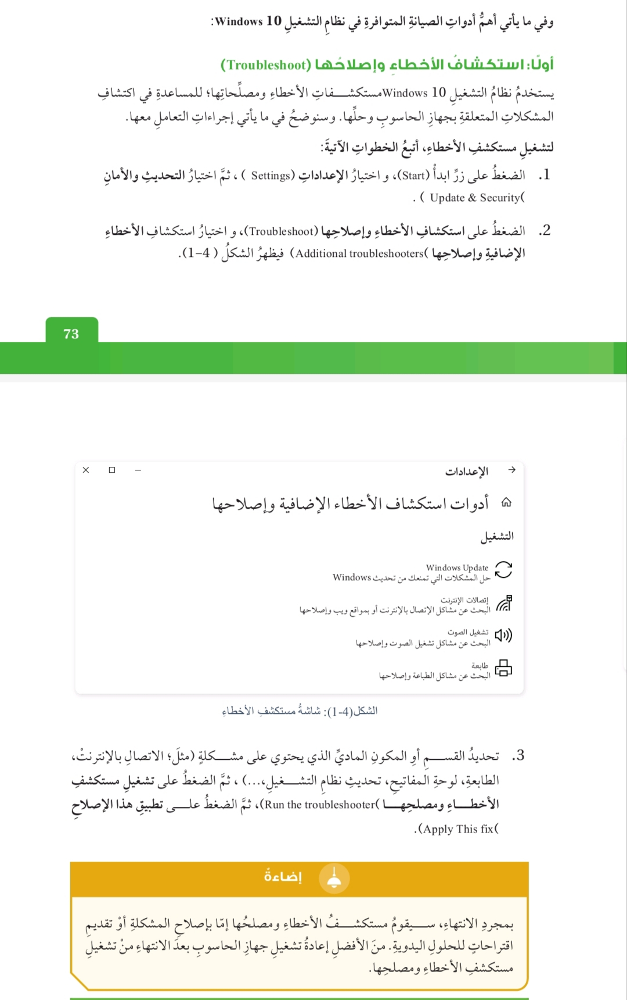
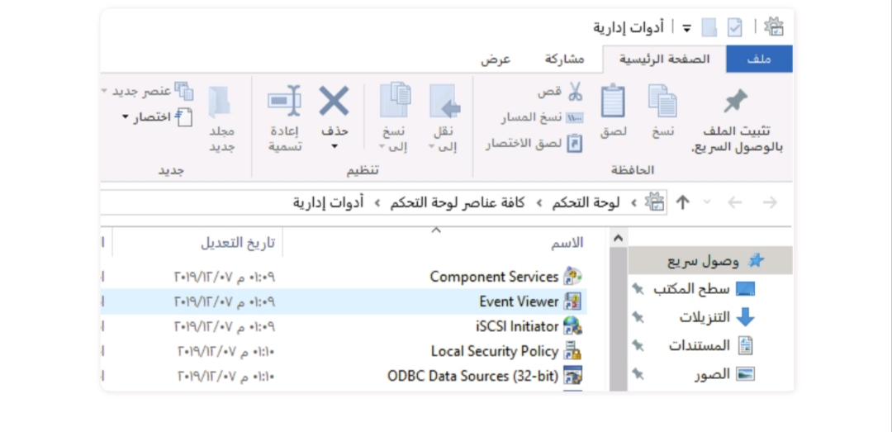
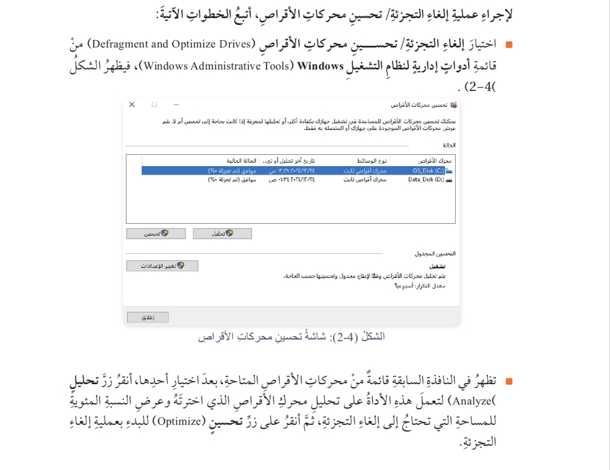
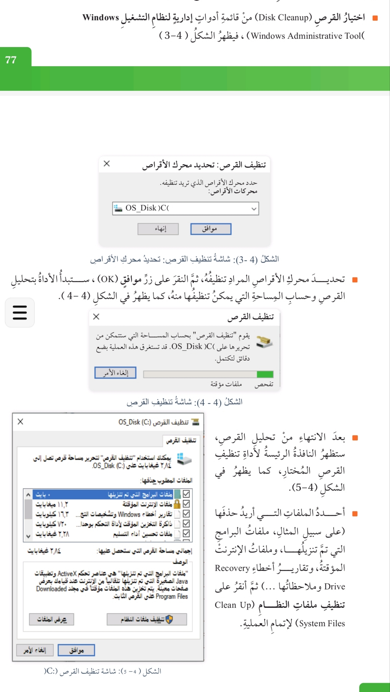
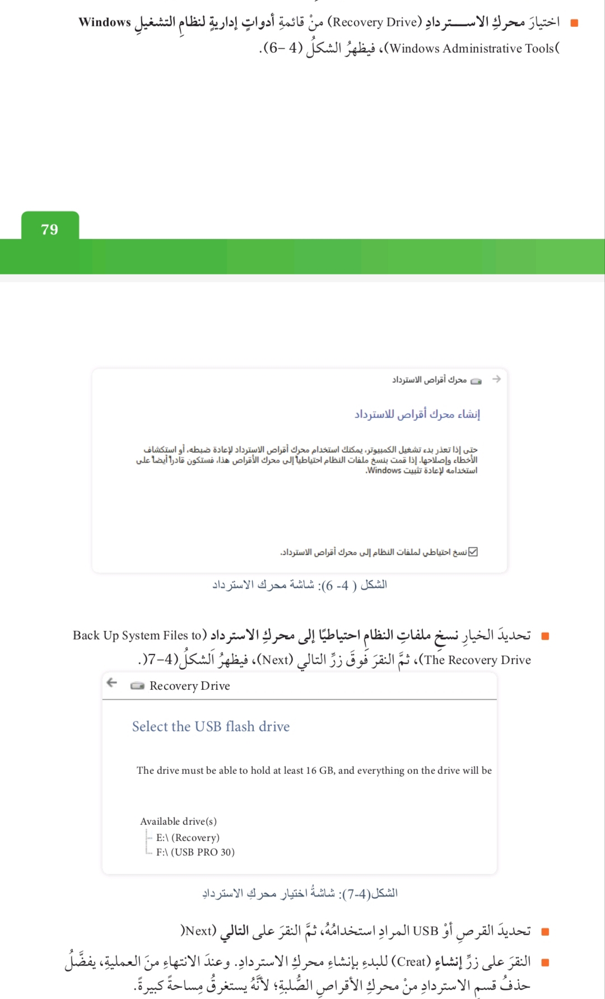
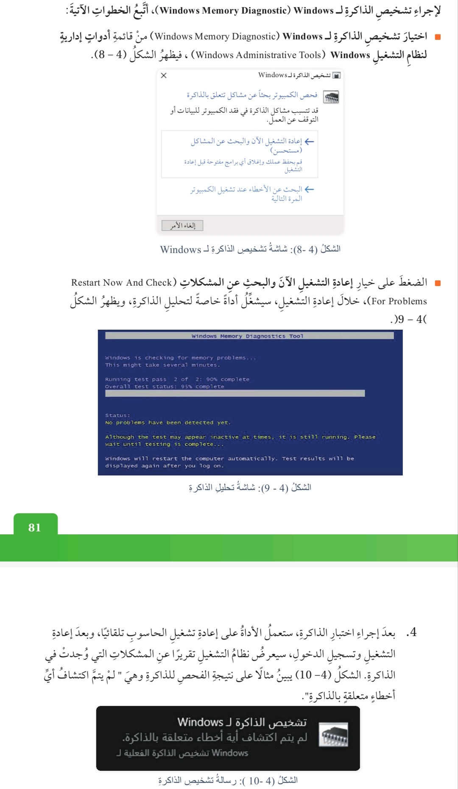
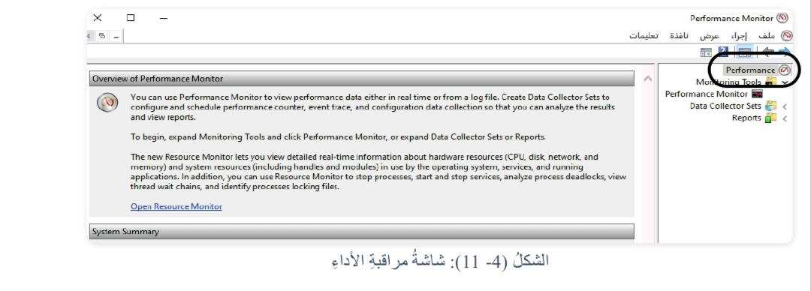

(Troubleshooting Using Operating System Tools)
يوفر نظام التشغيل Windows مجموعة من أدوات الصيانة التي تسهم في تحسين الأداء العام لنظام التشغيل وتسريعه، بالإضافة إلى اكتشاف بعض الأخطاء المحتملة.
تساعد الأدوات المدمجة في نظام التشغيل 10 Windows في تشخيص المشكلات التقنية التي يمكن مواجهتها عند استخدام جهاز الحاسوب وإصلاحها وقد تم تصميم هذه الأدوات لتكون سهلة الوصول وفعالة في مساعدة المستخدمين على حلّ مشكلاتهم بسرعة ودقة.
وسواء أكنت تعاني من مشكلات في الأداء، أو مشكلات في الاتصال بالإنترنت أو مشكلات في تحديث النظام، فإنّ هذه الأدوات تقدم الدعم اللازم لضمان استمرار عمل نظام 10 Windows بكفاءة.
اذكر أهم أدوات الصيانة المتوافرة في نظام التشغيل 10 Windows:
:أولا استكشاف الأخطاء وإصلاحها (Troubleshoot
ثانيا: مجلد أدوات إدارة نظام التشغيل Windows (Windows Administrative Tools)
ثالثاً: الأدوات الإدارية لنظام التشغيل 10 Windows
علل يستخدم نظام التشغيل 10 Windows مستكشفاتِ الأخطاء ومصلحاتها؛ للمساعدة في اكتشاف المشكلات المتعلقة بجهاز الحاسوب وحلها.

أبحث في المواقع الإلكترونية الموثوقة عن برامج إصلاح مشكلات نظام التشغيل 10 Windows المجانية ، ثم أشاركها مع زملائي / زميلاتي في الصف عن طريق اللوح التفاعلى .(Padlet)
يفحص ملفات النظام التالفة ويصلحها : (SFC (sfc /scannow .1
يصلح (DISM (DISM /Online /Cleanup-image /Restorehealth .2 إذا لزم الأمر SFC صورة النظام قبل استخدام
يفحص القرص الصلب ويصلح القطاعات التالفة CHKDSK .3
يصلح مشاكل الريجستري تحديثات Windows Repair (All in One .1 الجدار الناري وغيرها Windows،
يجمع أدوات تشخيص وإصلاح مختلفة في Windows Repair Toolbox .2 برنامج واحد محمول
يفحص النظام ضد الفيروسات والبرمجيات Microsoft Safety Scanner .3 الخبيثة عند الطلب
عند استخدام أداة استكشاف الأعطال وإصلاحها ستظهر بعض الرسائل أحيانًا للدلالة على المشكلة في ما يأتي بعض الرسائل التي قد تظهر ، أفكر في مدلول هذه الرسائل وأتعاون مع زملائي في المجموعة على تحليلها واقتراح طرق الحل:
"USB Device not recognized"
"The application was unable to start correctly (0xc0000005)" ■
"Windows Update Error: (0x80070057)" ■
"This app cant open"
نتبادل الحلول مع المجموعات الأخرى، ونستخدم المواقع الموثوقة على الإنترنت للتأكد من الحل الصحيح لكل رسالة.
المدلول الجهاز الموصول عبر USB لم يتم التعرف عليه، قد يكون بسبب مشكلة في تعريف الجهاز (Driver).
منفذ USB تالف أو ضعيف.
مشكلة في الكابل أو الجهاز نفسه.
المدلول خطأ في تشغيل البرنامج ، غالبًا مرتبط بملفات مفقودة أو تالفة أو مشاكل في الذاكرة.
:المدلول خطأ في تحديثات Windows، غالبا بسبب:
المدلول التطبيق غير قادر على التشغيل بسبب
(Windows Administrative Tools)
على ماذا يحتوي مجلد أدوات إدارة نظام التشغيل Windows
وضح المقصود بمجلد أدوات إدارة نظام التشغيل Windows
اهمية / فوائد مجلد أدوات إدارة نظام التشغيل Windows
يحتوي هذا المجلد على مجموعة من البرامج والأدوات التي تساعد في تحسين الأداء العام لنظام التشغيل Windows وتسريعه، بالإضافة إلى اكتشاف بعض الأخطاء المحتملة.
للوصول إلى الأدواتِ الإدارية لنظام التشغيل 10 Windows يجب الضغط على زر ابدأ (Start) ، ثم اختيار أدوات إدارية لنظام التشغيل Windows Administrative Tools Windows)، فتظهر مجموع من الأدوات الإدارية، ولكل منها وظيفته وإجراءاته.

:أولاً : إلغاء التجزئة / تحسين محركات الأقراص Defragment and Aptimize (Drives
ثانيا: تنظيف القرص (Disk Cleanup
ثالثًا: محرك الاسترداد (Recovery Drive)
رابعًا تشخيص الذاكرة (Windows Memory Diagnostic )
خامسا: مراقب الأداء (Performance Monitor)
سبب استخدام أداة إلغاء التجزئة / تحسين محركات الأقراص Defragment (and Aptimize Drives
قد نحتاج في بعض الأحيان إلى إعادة ترتيب الملفات والبيانات المخزنة على القرص الصلب (HDD) وتنظيمها؛ إذ تؤدي كثرة التخزين والحذف على القرص الصلب إلى بطء فى سرعة جهاز الحاسوب عند استدعاء الملفات. يوفر برنامج إلغاء التجزئة تحسين محركات الأقراص إمكانية إعادة ترتيب الملفات وتنظيمها وإزالة المساحات الفارغة بينها؛ مما يسهم فى زيادة الكفاءة لعمليات القراءة والكتابة من القرص الصلب وإليه ، ومن ثمَّ تحسين أداء الحاسوب بصورة عامة.

يقوم نظام التشغيل Windows تلقائيًا بتحسين محركات الأقراص الخاصة مرةً واحدةً في الأسبوع بشكل افتراضي، ولكن إذا كنتُ أرغب في تغيير هذا الجدول، يمكنني النقر على زر تغيير الإعدادات Change settings ، وتغيير الجدول إلى يومي او شهري.
أبحث في المواقع الإلكترونية الموثوقة عن برامج إلغاء التجزئة / تحسين محركات الأقراص المجانية، ثمَّ أشاركها مع زملائي زميلاتي في الصف عن طريق اللوح التفاعلي (Padelt).
1 Defraggler
إلغاء تجزئة الملفات أو الأقراص بالكامل.
يدعم HDD و SSD ، واجهة بسيطة.
21 Auslogics Disk Defrag
إلغاء تجزئة سريع للأقراص الصلبة.
جدولة تلقائية ودعم الملفات والأقراص.
3 Smart Defrag
إلغاء تجزئة تلقائى وتحسين أداء الألعاب.
جدولة تلقائية، يدعم الإقلاع لإلغاء التجزئة.
4 UltraDefrag
مفتوح المصدر، إلغاء تجزئة الملفات أثناء الإقلاع
5 Windows Built-in Defragmenter
أداة مدمجة في 10 Windows.
إلغاء تجزئة تلقائي للأقراص واجهة سهلة الاستخدام.
ملاحظة : للأقراص SSD يُفضل عدم استخدام إلغاء التجزئة التقليدي واستخدام أدوات تحسين مخصصة للـ SSD.
وضح المقصود باداة تنظيف القرص (Disk Cleanup)
اذكر تأثير أداة تنظيف القرص (Disk Cleanup) على القرص الصلب
هي أداة تستخدم للحصول على مساحة خالية على القرص الصلب عن طريق إزالة الملفات غير الضرورية وغير المرغوب فيها؛ مما يؤثر إيجابيًا في عمل القرص الصلب بكفاءة أكبر، ومن ثم إلى زيادة كفاءة جهاز الحاسوب.

تحديد محرك القراص ثم موافق
أنقر على تنظيف ملفات النظام
أحدد الملفات التي أريد حذفها اختيار القرص من قائمة ادوات اداية لنظام التشغيل
أناقش زملائي في الفَرْق بين عمليتي (تنظيف القرص ) و (إلغاء التجزئة من حيث تأثيرُهُما فى عمل جهاز الحاسوب والمدة الزمنية اللازمة لإجراء كل منهما، ونشارك أفكارنا مع المجموعات الأخرى.
التأثير على الجهاز يحرر مساحة تخزين بحذف الملفات المؤقتة والمهملة، مما يساعد النظام على العمل بشكل أسرع عند الوصول إلى الملفات.
المدة الزمنية قصيرة عادة دقائق قليلة حسب كمية الملفات.
التأثير على الجهاز يرتب الملفات على القرص الصلب بطريقة متتابعة ، مما يحسن سرعة الوصول للملفات ويزيد أداء النظام على الأقراص HDD) غير ضروري للأقراص (SSD)
المدة الزمنية : أطول، قد يستغرق من عدة دقائق إلى ساعات القرص ودرجة التجزئة.
يتم عمل من خلال أداة محرك الاسترداد Recovery Drive) حفظ نسخة احتياطية من ملفات نظام التشغيل Windows جميعها بالإضافة إلى الملفات الشخصية.
متى نستخدم أداة محرك الاسترداد
إذا واجه جهاز الحاسوب فشلا فى العمل؛ إذ سنقوم باسترداد تلك النسخة من أجل إعادة تثبيت نظام التشغيل 10 Windows.

لعمل محرك استرداد، يفضّل استخدام محرك أقراص فارغ لا يقل عن (16GB).
وضح المقصود ب تشخيص الذاكرة Windows Memory Diagnostic )
وظيفة تشخيص الذاكرة Windows Memory Diagnostic )
الهدف من تشخيص الذاكرة Windows Memory Diagnostic )
تعمل هذه الأداة من الأدوات الإدارية على فحص ذاكرة الوصول العشوائي RAM وإعطاء تقرير مفصل بجميع المشكلات التي تعاني منها الذاكرة في نهاية الفحص.

وظيفة مراقب الأداء (Performance Monitor)
وظيفة هذه الأداة فتح نافذة مراقبة الأداء التي تحتوي على معلومات استخدام موارد جهاز الحاسوب المعالج، الذاكرة، كرت الشاشة الشبكة)، كما يظهر في الشكل

أناقش زملائي في المجموعة في أهمية المعلومات التي تظهرها شاشة مراقب الأداء، وندونُ ثلاث فوائد يمكن الاستفادة منها. ونتبادل الأفكار مع المجموعات الأخرى.
أهمية شاشة مراقب الأداء: متابعة حالة الحاسوب ومكونات النظام بشكل لحظى.
ثلاث فوائد
1. معرفة استخدام المعالج والذاكرة والقرص.
.2 اكتشاف أسباب بطء الجهاز أو تعطل البرامج.
3. تحسين إدارة الموارد واتخاذ قرارات لصيانة الجهاز.